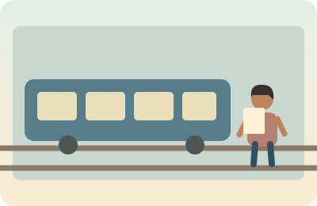

तुलनात्मक विश्लेषण
Comparative analysis
Audio uses your device’s Hindi voice; availability varies. No native recordings included.मुख्य अवधारणा
Understand the conceptतुलनात्मक लेखन में विषयवार संगठन उपयोगी है। एक-एक पाठ का अलग सारांश लिखकर रुकने के बजाय वास्तविक समानताओं और भिन्नताओं का विश्लेषण करें।
शब्द और अर्थ
Vocabularyउदाहरण और पठन
Examples & readingदो पाठों में समान विषय अलग शैली में आ सकता है।
एक में संवाद, दूसरे में वर्णन प्रमुख हो सकता है।
तुलना दोनों पाठों के प्रमाण माँगती है।
विस्तृत पठन
Extended reading
एक दृश्य, दो माध्यम
कथा रूप: शाम को सीमा स्टेशन पहुँची। उसने घड़ी देखी और जेब में रखा पत्र फिर पढ़ा। ट्रेन की घोषणा सुनकर उसने फैसला बदल दिया। मंच रूप: एक कुर्सी, पीली रोशनी और दूर से आती ट्रेन की ध्वनि। सीमा प्रवेश करती है, पत्र खोलती है, कुछ कहने को होती है और रुक जाती है। घोषणा सुनाई देती है। वह पत्र समेटकर विपरीत दिशा में चली जाती है। पहले रूप में कथावाचक निर्णय बताता है; दूसरे में दर्शक गति और मौन से उसका अनुमान लगाता है।
पठन-बोध
दोनों रूपों में क्या समान है?
पत्र, स्टेशन और निर्णय में परिवर्तन।
मंच रूप किस माध्यम से अर्थ देता है?
ध्वनि, प्रकाश, गतिविधि और मौन।
क्या बदलने पर भी कथा का मूल सुरक्षित रह सकता है?
हाँ, यदि प्रमुख संघर्ष और अर्थ संबंध बना रहे।
बोलें और सोचें
Apply itदो छोटे पाठों के कथ्य, स्वर और माध्यम की तालिका बनाएं।
लेखन अभ्यास
Writing practiceउदाहरण का विश्लेषण करें, फिर अपना स्वतंत्र उत्तर प्रमाण सहित लिखें।
स्वतंत्र लेखन कक्ष
Writing workspaceअपना ज्ञान जाँचें
Check your learningकेवल एक पाठ से तुलना संभव है?
उत्तर देखें
नहीं, दोनों के प्रासंगिक उदाहरण चाहिए।
इस पाठ में दिए गए अर्थ से शब्द मिलाएँ: criterion
उत्तर
मानदंड
Completion is self-marked and saved locally.